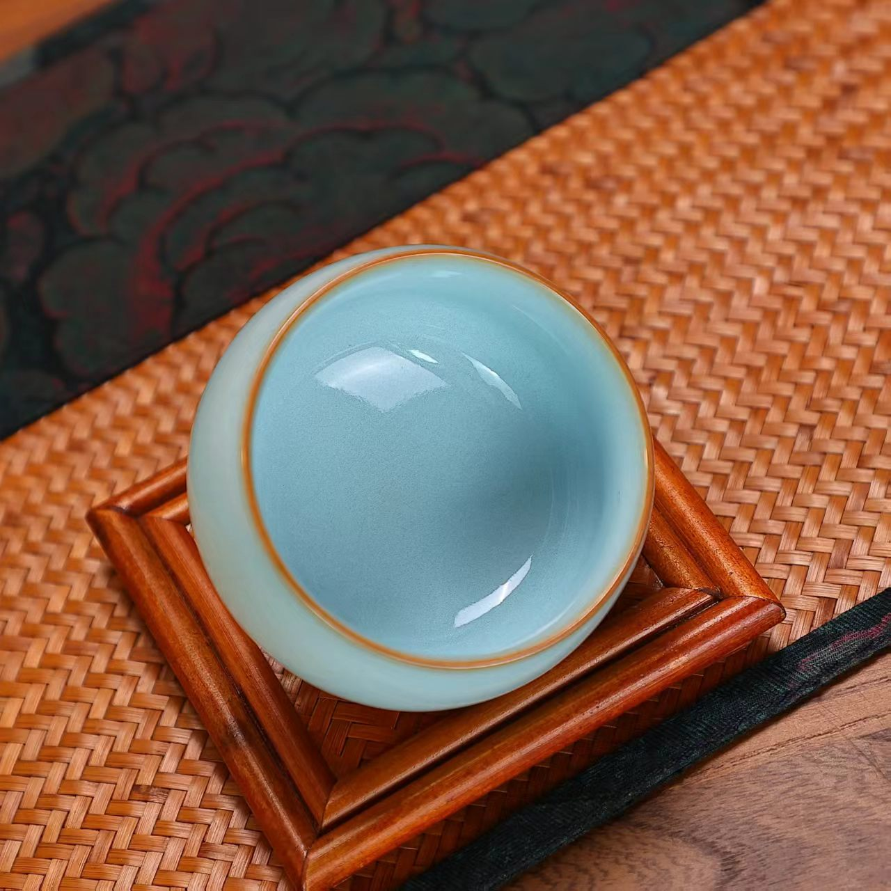

宋代五大名窑之首 · 河南汝州 · 国家级非物质文化遗产

汝瓷，宋代五大名窑之首，以河南汝州为中心，以天青釉色著称于世。汝瓷釉色温润如玉，釉面常有细碎开片，俗称"蟹爪纹"。汝瓷追求"天青"之美，有"雨过天青云破处，这般颜色做将来"的千古美誉。汝瓷造型古朴典雅、釉色清雅恬淡，是中国陶瓷史上最具文人气质和哲学深度的瓷器品种之一。
汝瓷的美学品格在于"简约中的极致"。不求繁复的装饰，而以釉色取胜、以器型见长。"天青"釉色所承载的"道法自然""清雅平淡"的审美理想，与宋代文人"格物致知"的精神追求高度契合。汝瓷是中国古代"雅文化"的典型代表，体现了宋人"尚意""尚雅"的美学风尚。每一件汝瓷都是自然与人工的完美结合，是泥土与火焰共同创造的艺术奇迹。
汝瓷起源于北宋初期，兴盛于北宋晚期。宋徽宗时期，汝瓷被指定为宫廷御用瓷器，专门为皇室烧制，"唯供御拣退，方许出卖"，可见其珍贵程度。金兵南下后，汝窑烧制技艺中断，汝瓷成为陶瓷史上的千古绝唱。传世汝瓷极为稀少，目前全球仅存不足百件，主要收藏于北京故宫博物院、台北故宫博物院、上海博物馆、大英博物馆等世界著名博物馆。
汝瓷烧制技艺在断代八百余年后，于20世纪50年代开始恢复。经过几代陶瓷艺人的不懈努力，汝瓷烧制技艺得以重现。2006年，汝瓷烧制技艺被列入国家级非物质文化遗产名录，汝瓷艺术的保护与传承进入新的历史阶段。